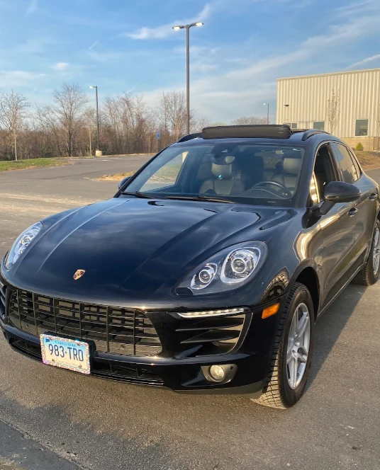

Diagnostics
Check-engine lights, electrical concerns and computer diagnostic testing.
FIND THE CAUSE
PLAN A VISIT 
THE SHOP ON EAST MAIN
Diagnostics, brakes and everyday maintenance.
Straightforward auto repair, right here in Torrington.
THE WORK THAT KEEPS YOU MOVING
From a routine oil change to a warning light that needs an answer. Start with what your car needs.
Check-engine lights, electrical concerns and computer diagnostic testing.
Brake service and repairs, from pads and rotors to the parts behind the pedal.
Oil changes, coolant service and the fluids your vehicle depends on.
Tire sales and service, suspension work and shock repairs.
Exhaust system repairs for leaks, wear and unwanted noise.
Batteries, belts, hoses, tune-ups and preventative maintenance.
Not sure what it needs? Tell the shop what you’re noticing.
(860) 482-4030A CLEARER PICTURE
A warning light starts the conversation. The next step is understanding what your car is telling you.
What changed? When does it happen?
Diagnostic testing helps narrow it down.
Ask what needs attention and why.
Talk through the repair and timing.

FROM VERIFIED SERVICE VISITS
“No nonsense straightforward and affordable.”
“repair was done well and on time.”
“Excellent repair shop. Quality work and fair pricing.”
Selected excerpts · Rating checked September 13, 2026 · Read all reviews ↗
RIGHT HERE IN TORRINGTON
Keep your regular service close to home. Find Gary’s Hilltop on East Main Street, with Harwinton just down the road.
Call to talk through your vehicle, the work it needs and a time to bring it in.
Call ahead for weekend hours and appointment availability.
YOUR NEXT STEP
Call the shop for an appointment. Have your vehicle details and a quick description of the problem ready.
(860) 482-4030Use the form to put your service note together, then call to confirm a time with the shop.
READY FOR YOUR CALL
Use this when you call. The shop will confirm your appointment.